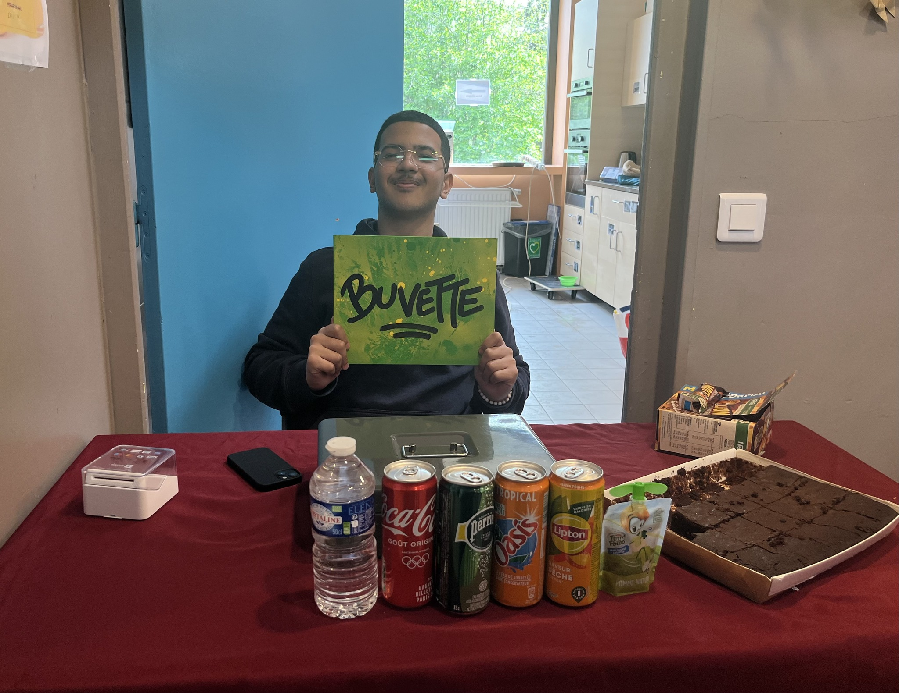
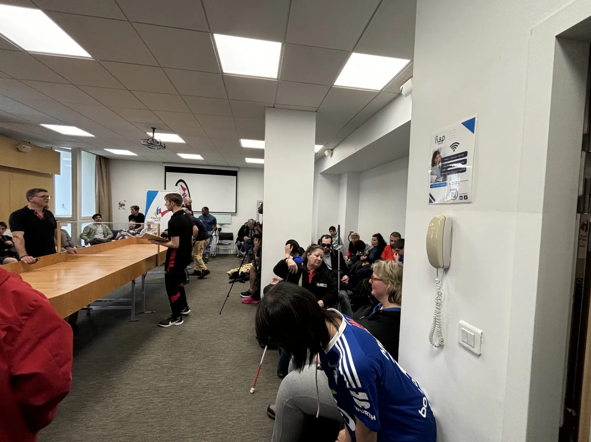
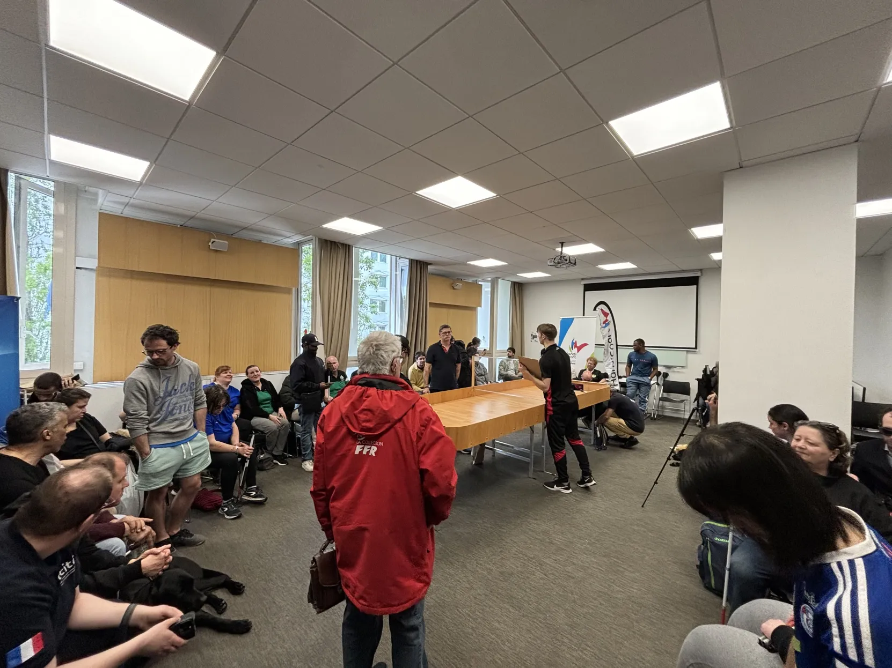
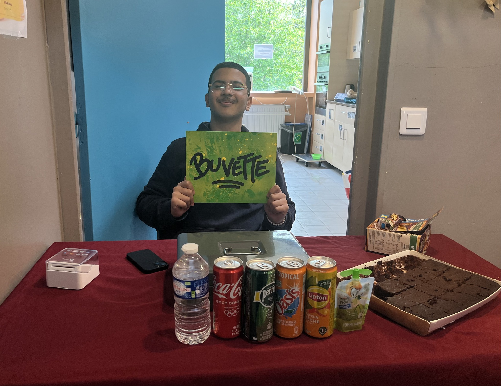
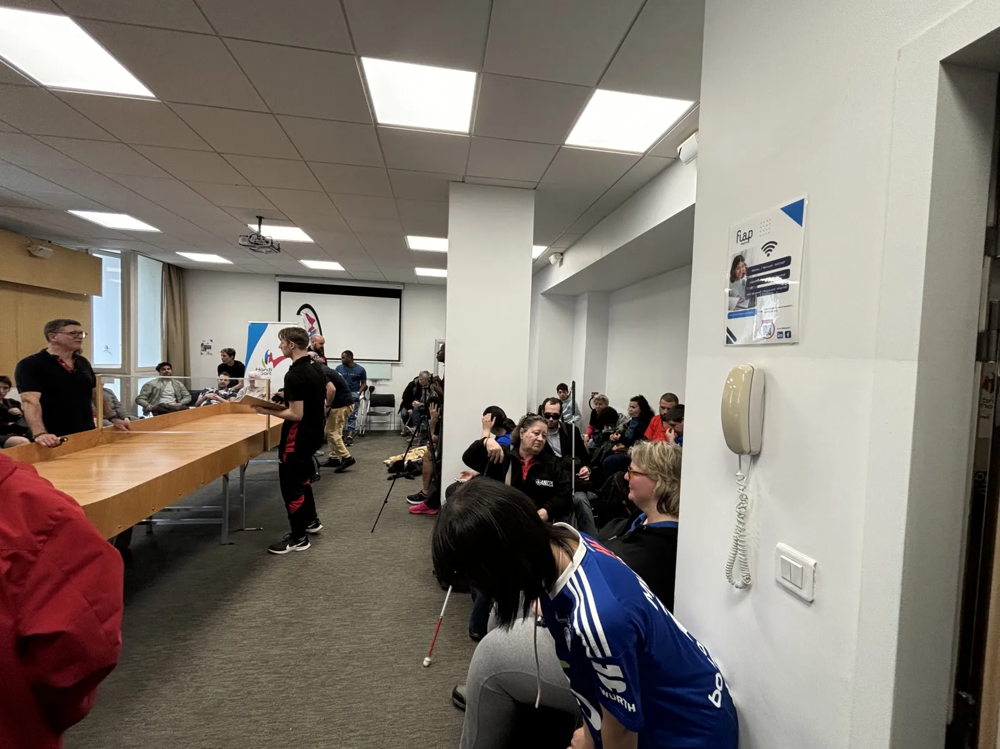
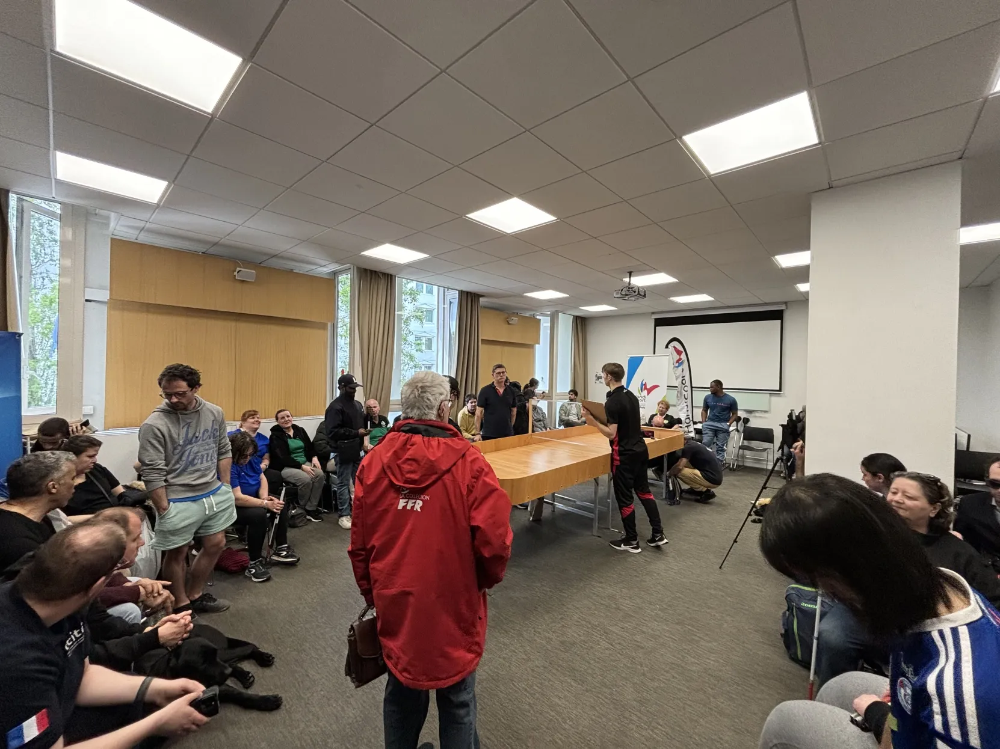

Au cours de mon engagement au sein de l'association BienHêtre, j'ai participé activement à plusieurs actions visant à soutenir et promouvoir l'intégration des personnes en situation de handicap. Voici deux actions majeures auxquelles j'ai contribué :
J'ai participé à une action buvette où j'ai vendu des boissons et des collations lors d'événements organisés par l'association. Les fonds récoltés ont été utilisés pour financer diverses initiatives et activités de BienHêtre. Mes tâches comprenaient :
- Installation et préparation de la buvette.
- Service des clients et gestion des ventes.
- Maintien de la propreté et de l'ordre de la zone de vente.
- Gestion des stocks de boissons et de collations.
Cette action m'a permis de contribuer directement au financement de l'association tout en développant des compétences en vente et en service à la clientèle.
J'ai également participé à l'organisation d'un tournoi de Division 2 de showdown, un sport de raquette adapté aux personnes aveugles et malvoyantes. Mes responsabilités comprenaient :
- Accompagnement des malvoyants et aveugles vers leurs salles et chambres.
- Garde des chiens guides.
- Aide à la cantine pour les repas (préparation des plateaux, accompagnement et description des menus).
- Accueil des participants à leur arrivée.
- Service de boissons (café, thé, eau).
- Indications des toilettes et autres installations.
Cette expérience m'a permis de développer des compétences en matière d'accompagnement et de soutien, tout en approfondissant ma compréhension des besoins des personnes handicapées.
Ces expériences ont renforcé mon engagement envers les actions humanitaires et l'inclusion des personnes en situation de handicap. J'ai appris à mieux comprendre leurs besoins et à leur offrir un soutien adapté, tout en contribuant activement aux objectifs de l'association BienHêtre.
Participer à l'organisation de ce tournoi m'a offert une perspective unique sur les défis quotidiens rencontrés par les personnes aveugles et malvoyantes. Cela m'a permis de développer des compétences en matière d'accompagnement et de communication, et de renforcer mon engagement envers les actions humanitaires et l'inclusion des personnes handicapées.